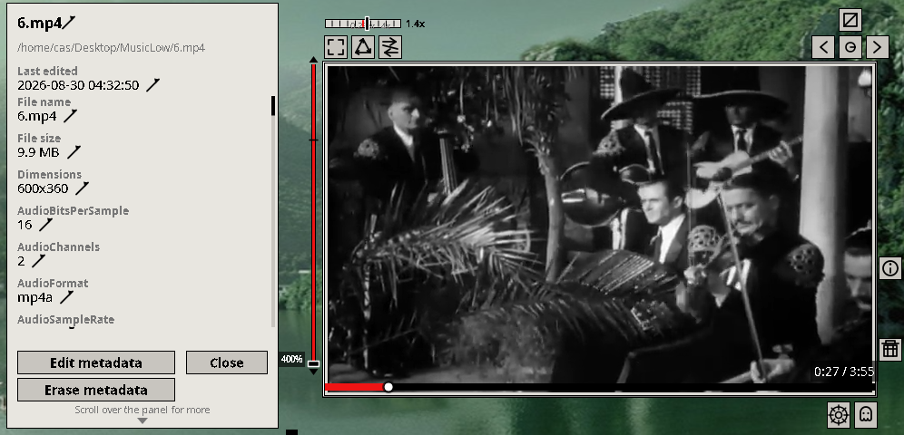
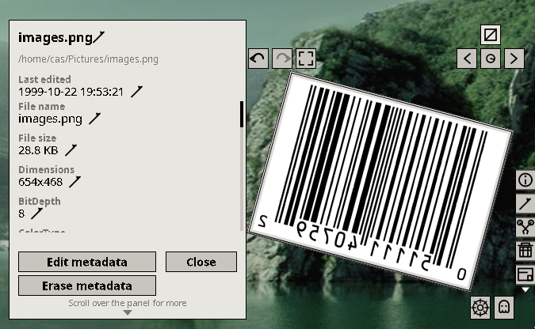

Projekte
Software zeugs:
Preise
- Poseidon Media 4 €
- Deine eigene Seite (einseitig) 39 €
- Treasure −80 % vom Originalpreis
Poseidon Media
Poseidon Media unterstützt so gut wie jede Art von Media. Es hat einen Haufen praktische Features und ist noch in der Beta-Phase, Updates kommen wenn ich Zeit habe. Es ist ein Tool, um jede Art von Media übersichtlicher und praktischer analysieren, ändern und anschauen zu können.


Webseiten
Du kriegst eine Webseite musst nur sagen wie du es haben willst.
MegaMalware
Ich säubere deine "100% no strings atached free media".Extra infos? Eif anschreiben.